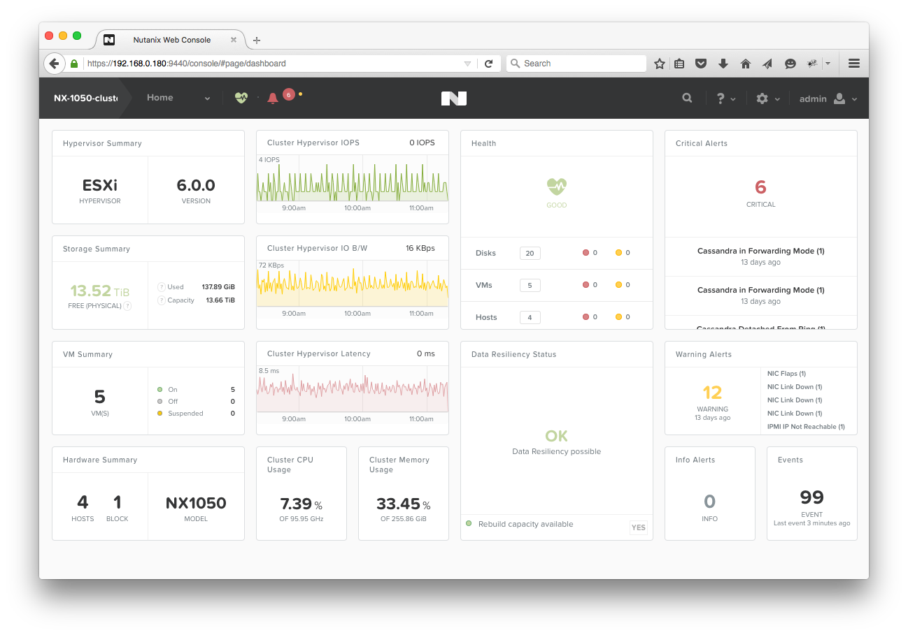
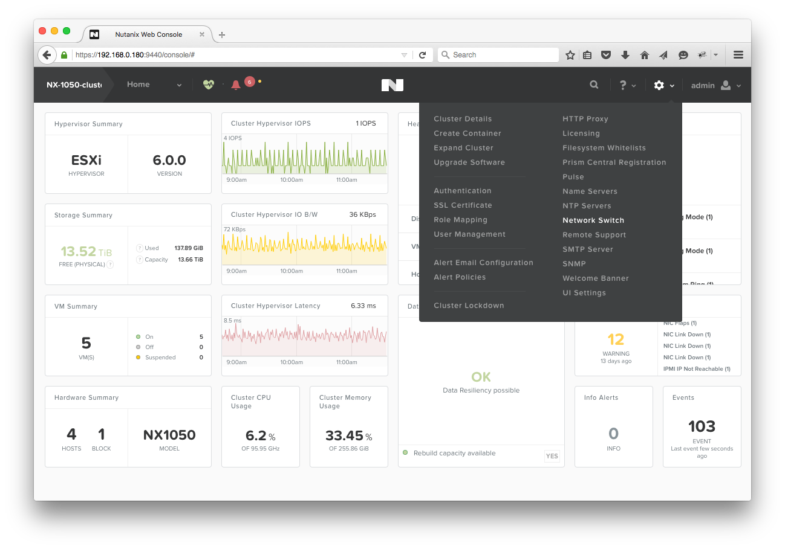
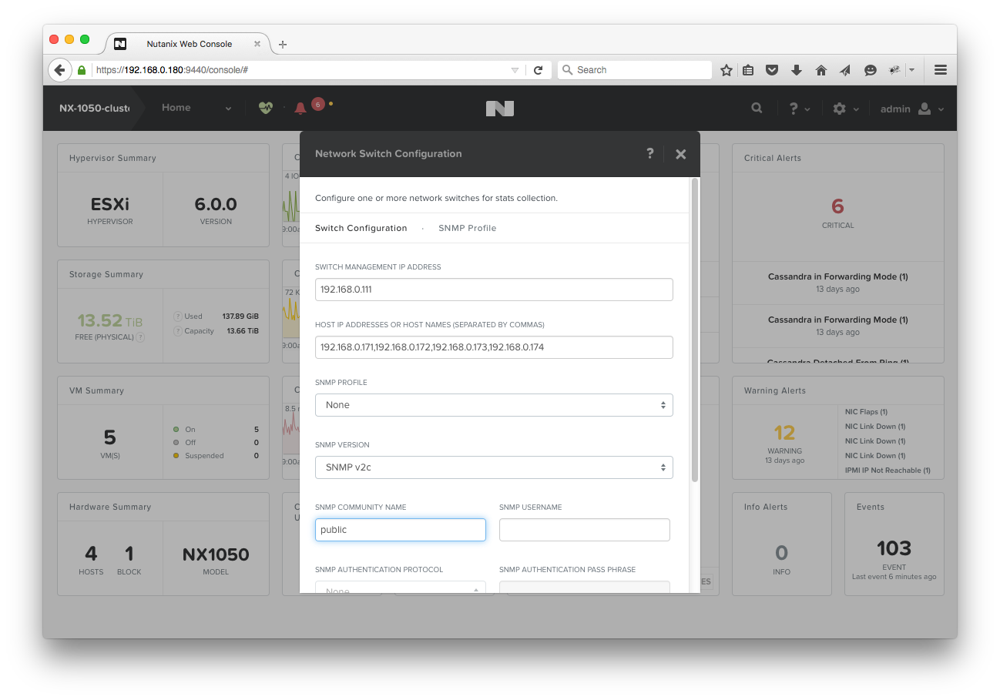
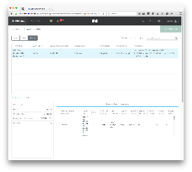
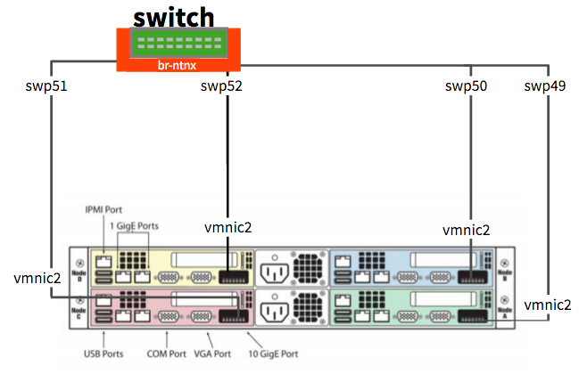

Using Nutanix Prism as a Monitoring Tool
Nutanix Prism is a graphical user interface (GUI) for managing infrastructure and virtual environments. In order to use it, you need to take special steps within Cumulus Linux before you can configure Prism.
Contents
Configuring Cumulus Linux
-
SSH to the Cumulus Linux switch that needs to be configured, replacing [switch] below as appropriate:
cumulus@switch:~$ ssh cumulus@[switch] -
Confirm the switch is running Cumulus Linux 2.5.5 or newer:
cumulus@switch:~$ net show systemCumulus3.2.1~1484951197.337c36aBuild: Cumulus Linux3.2.1~1484951197.337c36aUptime:4days,1:30:04 -
Open the /etc/snmp/snmpd.conf file in an editor.
-
Uncomment the following 3 lines in the /etc/snmp/snmpd.conf file, and save the file:
-
bridge_pp.py
pass_persist .1.3.6.1.2.1.17/usr/share/snmp/bridge_pp.py -
Community
rocommunitypublicdefault-V systemonly -
Line directly below the Q-BRIDGE-MIB (.1.3.6.1.2.1.17)
# BRIDGE-MIB and Q-BRIDGE-MIB tablesview systemonly included .1.3.6.1.2.1.17
-
-
Restart snmpd:
cumulus@switch:~$ sudo systemctl restart snmpd.serviceRestarting network management services: snmpd.
Configuring Nutanix
-
Log into the Nutanix Prism. Nutanix defaults to the Home menu, referred to as the Dashboard: 
-
Click on the gear icon in the top right corner of the dashboard, and select NetworkSwitch: 
-
Click the +Add Switch Configuration button in the Network Switch Configuration pop up window.
-
Fill out the Network Switch Configuration for the Top of Rack (ToR) switch configured for snmpd in the previous section:

Configuration Parameter
Description
Value Used in Example
Switch Management IP Address
This can be any IP address on the box. In the screenshot above, the eth0 management IP is used.
192.168.0.111
Host IP Addresses or Host Names
IP addresses of Nutanix hosts connected to that particular ToR switch.
192.168.0.171,192.168.0.172,192.168.0.173,192.168.0.174
SNMP Profile
Saved profiles, for easy configuration when hooking up to multiple switches.
None
SNMP Version
SNMP v2c or SNMP v3. Cumulus Linux has only been tested with SNMP v2c for Nutanix integration.
SNMP v2c
SNMP Community Name
SNMP v2c uses communities to share MIBs. The default community for snmpd is 'public'.
public
The rest of the values were not touched for this demonstration. They are usually used with SNMP v3.
-
Save the configuration. The switch will now be present in the Network Switch Configuration menu now.
-
Close the pop up window to return to the dashboard.
-
Open the Hardware option from the Home dropdown menu:

-
Click the Table button.
-
Click the Switch button. Configured switches are shown in the table, as indicated in the screenshot below, and can be selected in order to view interface statistics: 
The switch has been added correctly, when interfaces hooked up to the Nutanix hosts are visible.
Switch Information Displayed on Nutanix Prism
-
Physical Interface (e.g. swp1, swp2). This will only display swp interfaces connected to Nutanix hosts by default.
-
Switch ID - Unique identifier that Nutanix keeps track of each port ID (see below)
-
Index - interface index, in the above demonstration swp49 maps to Index 52 because there is a loopback and two ethernet interface before the swp starts.
-
MTU of interface
-
MAC Address of Interface
-
Unicast RX Packets (Received)
-
Unicast TX Packets (Transmitted)
-
Error RX Packets (Received)
-
Error TX Packets (Transmitted)
-
Discard RX Packets (Received)
-
Discard TX Packets (Transmitted)
The Nutanix appliance will use Switch IDs that can also be viewed on the Prism CLI (by SSHing to the box). To view information from the Nutanix CLI, login using the default username nutanix, and the password nutanix/4u.
nutanix@NTNX-14SM15270093-D-CVM:192.168.0.184:~$ ncli network list-switch Switch ID : 00051a76-f711-89b6-0000-000000003bac::5f13678e-6ffd-4b33-912f-f1aa6e8da982 Name : switch Switch Management Address : 192.168.0.111 Description : Linux switch 3.2.65-1+deb7u2+cl2.5+2 #3.2.65-1+deb7u2+cl2.5+2 SMP Mon Jun 1 18:26:59 PDT 2015 x86_64 Object ID : enterprises.40310 Contact Information : Admin <admin@company.com> Location Information : Raleigh, NC Services : 72 Switch Vendor Name : Unknown Port Ids : 00051a76-f711-89b6-0000-000000003bac::5f13678e-6ffd-4b33-912f-f1aa6e8da982:52, 00051a76-f711-89b6-0000-000000003bac::5f13678e-6ffd-4b33-912f-f1aa6e8da982:53, 00051a76-f711-89b6-0000-000000003bac::5f13678e-6ffd-4b33-912f-f1aa6e8da982:54, 00051a76-f711-89b6-0000-000000003bac::5f13678e-6ffd-4b33-912f-f1aa6e8da982:55Troubleshooting a Nutanix Node
To help visualize the following diagram is provided:

|
Nutanix Node |
Physical Port |
Cumulus Linux Port |
|
Node A (Green) |
vmnic2 |
swp49 |
|
Node B (Blue) |
vmnic2 |
swp50 |
|
Node C (Red) |
vmnic2 |
swp51 |
|
Node D (Yellow) |
vmnic2 |
swp52 |
Enabling LLDP/CDP on VMware ESXi (Hypervisor on Nutanix)
-
Follow the directions on one of the following websites to enable CDP:
-
kb.vmware.com/selfservice/microsites/search.do?language=en_US&cmd=displayKC&externalId=1003885
-
wahlnetwork.com/2012/07/17/utilizing-cdp-and-lldp-with-vsphere-networking/
For example, switch CDP on:
root@NX-1050-A:~] esxcli network vswitch standard set -c both -v vSwitch0Then confirm it is running:
root@NX-1050-A:~] esxcli network vswitch standard list -v vSwitch0vSwitch0Name: vSwitch0Class: etherswitchNum Ports:4082Used Ports:12Configured Ports:128MTU:1500CDP Status: bothBeacon Enabled:falseBeacon Interval:1Beacon Threshold:3Beacon Required By:Uplinks: vmnic3, vmnic2, vmnic1, vmnic0Portgroups: VM Network, Management NetworkThe both means CDP is now running, and the lldp dameon on Cumulus Linux is capable of 'seeing' CDP devices.
-
-
After the next CDP interval, the Cumulus Linux box will pick up the interface via the lldp daemon:
cumulus@switch:~$ lldpctl show neighbor swp49-------------------------------------------------------------------------------LLDP neighbors:-------------------------------------------------------------------------------Interface: swp49, via: CDPv2, RID:6, Time:0day,00:34:58Chassis:ChassisID: local NX-1050-ASysName: NX-1050-ASysDescr: Releasebuild-2494585running on VMware ESXMgmtIP:0.0.0.0Capability: Bridge, onPort:PortID: ifname vmnic2PortDescr: vmnic2------------------------------------------------------------------------------- -
Use net show to look at lldp information:
cumulus@switch:~$ net show lldpLocal Port Speed Mode Remote Port Remote Host Summary------------ ------- ------------- ---- ----------------- --------------- -------------------------eth0 1G Mgmt ==== swp6 oob-mgmt-switchIP:192.168.0.11/24(DHCP)swp1 1G Access/L2 ====44:38:39:00:00:03server01 Untagged: br0swp51 1G NotConfigured ==== swp1 spine01swp52 1G NotConfigured ==== swp1 spine02
Enabling LLDP/CDP on Nutanix Acropolis (Hypervisor on Nutanix Acropolis)
Nutanix Acropolis is an alternate hypervisor that Nutanix supports. Acropolis Hypervisor uses the yum packaging system and is capable of installing normal Linux lldp daemons to operating just like Cumulus Linux. LLDP should be enabled for each interface on the host. Refer to https://community.mellanox.com/docs/DOC-1522 for setup instructions.
Troubleshooting Connections without LLDP or CDP
-
Find the MAC address information in the Prism GUI, located in: Hardware > Table > Host > Host NICs
-
Select a MAC address to troubleshoot (e.g. 0c:c4:7a:09:a2:43 represents vmnic0 which is tied to NX-1050-A).
-
List out all the MAC addresses associated to the bridge:
cumulus@switch:~$ brctl showmacs br-ntnxport name mac addr vlan is local? ageing timerswp900:02:00:00:00:060no66.94swp5200:0c:29:3e:32:120no2.73swp4900:0c:29:5a:f4:7f0no2.73swp5100:0c:29:6f:e1:e40no2.73swp4900:0c:29:74:0c:ee0no2.73swp5000:0c:29:a9:36:910no2.73swp908:9e:01:f8:8f:0c0no13.56swp908:9e:01:f8:8f:350no2.73swp4 0c:c4:7a:09:9e:d40no24.05swp1 0c:c4:7a:09:9f:8e0no13.56swp3 0c:c4:7a:09:9f:930no13.56swp2 0c:c4:7a:09:9f:950no24.05swp52 0c:c4:7a:09:a0:c10no2.73swp51 0c:c4:7a:09:a2:350no2.73swp49 0c:c4:7a:09:a2:430no2.73swp944:38:39:00:82:040no2.73swp974:e6:e2:f5:a2:800no2.73swp174:e6:e2:f5:a2:810yes0.00swp274:e6:e2:f5:a2:820yes0.00swp374:e6:e2:f5:a2:830yes0.00swp474:e6:e2:f5:a2:840yes0.00swp574:e6:e2:f5:a2:850yes0.00swp674:e6:e2:f5:a2:860yes0.00swp774:e6:e2:f5:a2:870yes0.00swp874:e6:e2:f5:a2:880yes0.00swp974:e6:e2:f5:a2:890yes0.00swp1074:e6:e2:f5:a2:8a0yes0.00swp4974:e6:e2:f5:a2:b10yes0.00swp5074:e6:e2:f5:a2:b20yes0.00swp5174:e6:e2:f5:a2:b30yes0.00swp5274:e6:e2:f5:a2:b40yes0.00swp9 8e:0f:73:1b:f8:240no2.73swp9 c8:1f:66:ba:60:cf0no66.94Alternatively, you can use grep:
cumulus@switch:~$ brctl showmacs br-ntnx | grep 0c:c4:7a:09:a2:43swp49 0c:c4:7a:09:a2:430no4.58vmnic1 is now hooked up to swp49. This matches what is seen in lldp:
cumulus@switch:~$ lldpctl show neighbor swp49-------------------------------------------------------------------------------LLDP neighbors:-------------------------------------------------------------------------------Interface: swp49, via: CDPv2, RID:6, Time:0day,01:11:12Chassis:ChassisID: local NX-1050-ASysName: NX-1050-ASysDescr: Releasebuild-2494585running on VMware ESXMgmtIP:0.0.0.0Capability: Bridge, onPort:PortID: ifname vmnic2PortDescr: vmnic2-------------------------------------------------------------------------------